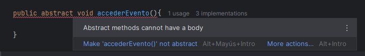
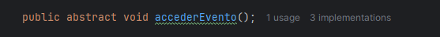

Una clase abstracta es una clase que no puede instanciarse por sí sola. Es decir, solamente sirve como una plantilla para que otras clases la hereden y completen su comportamiento. En pocas palabras, es una base común para un grupo de clases relacionadas por el mismo tipo. Estas clases pueden tener atributos y constructores, aunque el constructor sólo será llamado a través de sus subclases.
OJO. Aunque no sea posible instanciarse un objeto de la clase abstracta directamente, sí que se sigue pudiendo usar polimorfismo.
Además de clases, también podemos tener métodos abstractos que deben ser creados vacíos (sin cuerpo ni implementación), y las subclases están obligadas a sobrescribirlos.
--> Fíjate que si intentamos abrir llaves para darle un cuerpo, IntelliJ IDEA nos avisa de que no se puede:

Deberemos acabar la cabecera con un punto y coma (;) como si fuera una instrucción:

Ejemplo en Java:
Supongamos que seguimos con el ejemplo del Festival, pero ahora queremos asegurarnos de que todos los participantes tengan que implementar su forma de acceder al evento. Podemos hacer que Persona sea una clase abstracta:
abstract class Persona {
String nombre;
int edad;
public Persona (String nombre, int edad) {
this.nombre = nombre;
this.edad = edad;
}
//método tradicional (con implementación)
public void mostrarInfo() {
System.out.println("Nombre: " + nombre);
System.out.println("Edad: " + edad);
}
//método abstracto (sin implementación)
public abstract void accederEvento();
}Si ahora intentamos borrar de cualquiera de las subclases hijas el método accederEvento() que ya teníamos sobrescrito, el intérprete de Java se quejará:
El método mostrarInfo() será heredado normalmente por las subclases, igual que pasaba en la herencia tradicional.
¿Cuándo usar una clase abstracta?
- Cuando tenemos un comportamiento común que queremos compartir entre varias clases.
- Cuando queremos forzar a las subclases a implementar ciertos métodos.